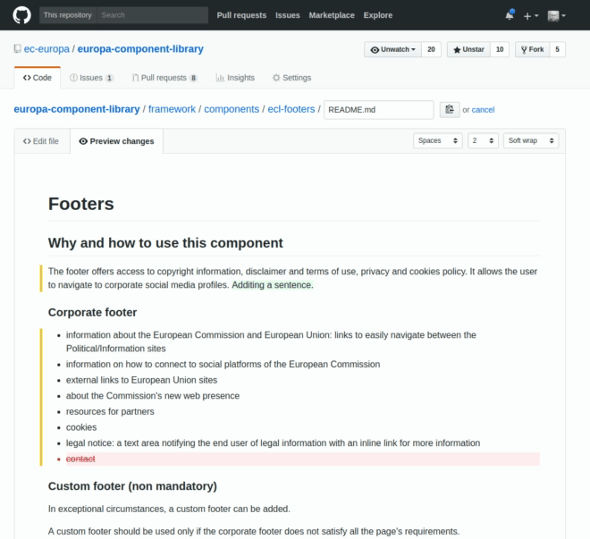

How to update documentation on ECL
This page explains how to update the documentation directly on GitHub.
Prerequisite
If you don’t already have an account on GitHub, make sure to create one and log in with it.
You also have to be part of team ECL doc editors. For an invite, please contact an owner of ec-europa.
Step 1: Locate the file you want to update
Go to ECL repository
Option 1) Search
Make a search query and filter for Markdown type of files, which are the
documentation format.
See how to do this step

Option 2) Browsing the repository
See how to do this step

Step 2: Create a new branch for your changes
In this step we will make a copy of the main version of the documentaiton in a temporary branch which helps us in the process of updates and reviews.
Name the branch docs/update-{component-name}-{ticket-number}, i.e.
docs/update-footer-INNO-123 or docs/update-footer-noissue if there is no
Jira ticket corresponding to the update.
See how to do this step

Step 3: Open documentation file for editing
Ensure that you have switched to your new branch which is a good place to
suggest changes. Then click on the button to open the README.md file in that
component (example: framework/components/ecl-footers/README.md)
See how to do this step

Step 4: Edit the documentation
Make any modification you wish by using the markdown editor. Here is a cheatsheet for markdown syntax
You can see the result directly by switching to the “Preview” tab
See how to do this step

Step 5: Save updates to the branch
After you have modified the file, you have to commit the changes to save them in your branch.
Enter title and description based on naming conventions.
Click on “Commit directly to the
docs/update-{component-name}-{ticket-number}“.This will save changes on your branch.
See how to do this step
Step 6: Open a pull request
Once you made sure you have saved changes on your particular branch, you are ready to proceed on proposing these changes to the main
v1branch which is where you see the documentation in production.You can simply use the hints which GitHub gives you when you go to the root of the repo after saving your changes.
Do not forget to add
tag: documentationon your pull request which is used for the release log.
See how to do this step

Step 7: Preview your changes and follow-up
When the pull request is open, our
HAL-Patch-INNObot will show you a preview of the ECL style guide with the updates provided by you.You can review them and make further changes on the branch repeating steps 1-5. Once the changes are saved, the pull request is automatically updated, no need to open another pull request.
Changes on the pull request update the preview automatically.
See how to do this step

It’s done!
Your pull request will be briefly reviewed by our team, so that there are no linting issues and if all checks are green, changes will be integrated with the v1 ECL branch in short time.
Thank you!
Note: writing convention
We are using writing conventions for both pull requests and markdown. You can optionally apply these conventions to facilitate documentation update process.
In any case, we will have to apply the conventions on our side before publishing it (so the content may be slightly modified).